資料分析
第十二章：其他美學
實踐大學
2026-06-06
其他美學
概覽
位置與顏色是 ggplot2 中最顯著的兩個美學，但還有一組豐富的額外美學可用來編碼資料——尤其當必須同時表示多個變數，或當僅靠顏色的做法不足時。
本章涵蓋：
- 大小（Size）——把連續值映射到點標記的面積或半徑
- 形狀（Shape）——把離散值映射到點標記的形狀
- 線寬（Line width）——獨立於大小之外控制線的寬度
- 線型（Line type）——把離散值映射到實線、虛線、點線或自訂的破折號型態
- 手動尺度——以明確的、手工製作的查找表把值指派給美學
- 恆等尺度——把預先縮放好的資料值直接傳遞給美學，不做轉換
大小
大小
size 美學最常用來縮放點標記與文字標籤。預設的尺度 scale_size()，把資料變數的線性增加映射到 geom 面積的線性增加——而非其半徑。面積縮放是有知覺正當性的預設，因為人對相對大小的判斷，對面積的校準比對線性尺寸的校準更好。
預設情況下，資料中最小的值以大小 1 呈現，最大的以大小 6 呈現。range 引數可覆寫這點：
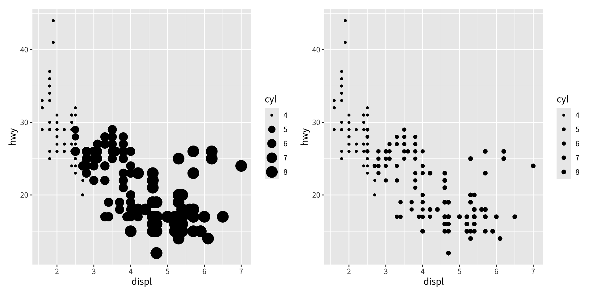
一族相關的大小尺度涵蓋了特殊情況：
| 尺度 | 說明 |
|---|---|
scale_size_area() |
面積縮放，資料值 0 映射到面積 0 |
scale_size_binned_area() |
scale_size_area() 的分箱版本 |
scale_radius() |
把資料值映射到點的半徑而非面積 |
scale_size_binned() |
把連續變數映射到離散的大小階梯 |
scale_size_date() / scale_size_datetime() |
日期／日期時間變數的大小尺度 |
半徑大小尺度
面積縮放並非總是適當。當資料變數本身就是一個物理半徑或直徑時，應改用半徑縮放，透過 scale_radius()。
考慮這個行星半徑的資料集：
planets <- data.frame(
name = c("Mercury","Venus","Earth","Mars",
"Jupiter","Saturn","Uranus","Neptune"),
type = c(rep("Inner", 4), rep("Outer", 4)),
position = 1:8,
radius = c(2440, 6052, 6378, 3390, 71400, 60330, 25559, 24764),
orbit = c(5.79e7, 1.08e8, 1.50e8, 2.28e8,
7.78e8, 1.43e9, 2.87e9, 4.50e9)
)
base_pl <- ggplot(planets, aes(1, name, size = radius)) +
geom_point() +
scale_x_continuous(breaks = NULL) +
labs(x = NULL, y = NULL, size = NULL)
base_pl + ggtitle("預設的 scale_size()——比例不正確")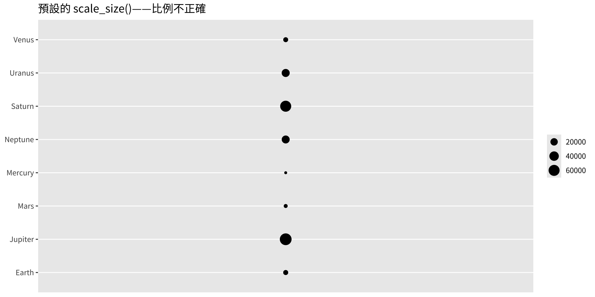
使用預設的 scale_size()，每個點的面積隨半徑²縮放，扭曲了表面上的比例。用 scale_radius() 搭配 limits = c(0, NA)，把零半徑的點錨定在零面積，便能忠實地呈現比例：
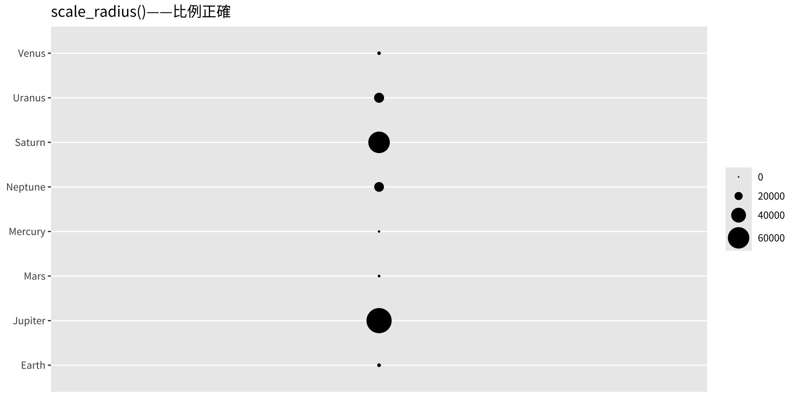
對比立即可見：木星的圓盤如今明顯比土星大得多，正確地反映出兩者的差異超過了地球的直徑。
分箱大小尺度
scale_size_binned() 把連續的大小變數離散成固定數目的大小階梯，類似於 §11.4 所見的分箱顏色尺度。分箱大小尺度的圖例由 guide_bins() 而非 guide_legend() 支配。
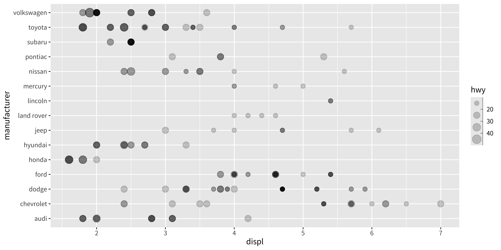
與把鍵排成表格的 guide_legend() 不同，guide_bins() 把它們沿單一軸排列，並附上選用的軸線。
guide_bins() 的關鍵引數：
| 引數 | 效果 |
|---|---|
axis |
顯示／隱藏鍵旁的軸線（預設 TRUE） |
direction |
"vertical"（預設）或 "horizontal" 版面 |
show.limits |
是否在尺度端點顯示刻度標記（預設 FALSE） |
axis.colour |
指引軸線的顏色 |
| 引數 | 效果 |
|---|---|
axis.linewidth |
指引軸線的寬度 |
axis.arrow |
用 arrow() 為軸線加上箭頭 |
keywidth / keyheight |
鍵的維度（grid 單位） |
reverse |
反轉鍵的順序 |
override.aes |
覆寫圖例鍵中的 geom 美學 |
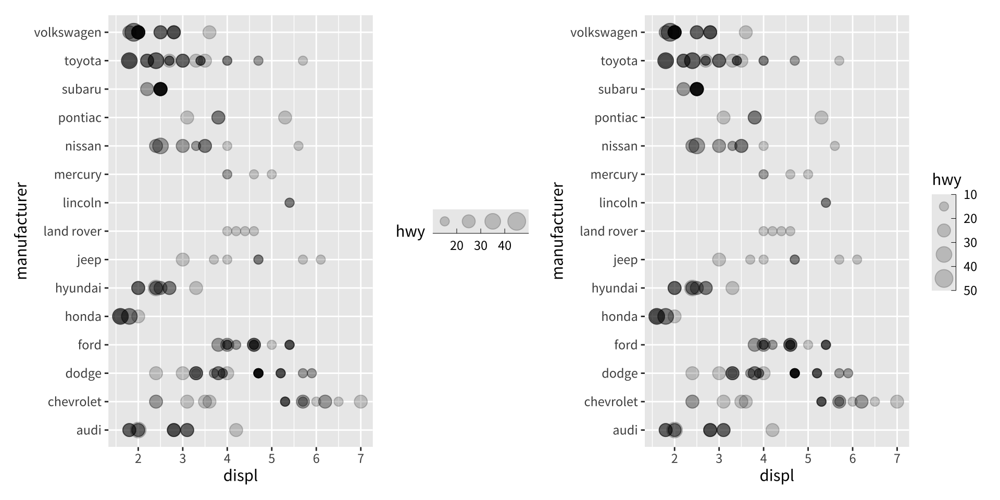
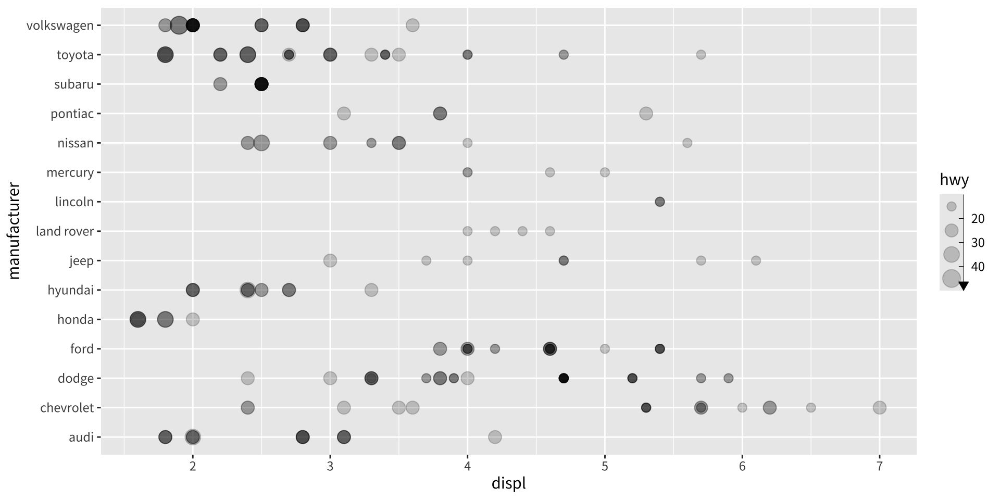
形狀
形狀
shape 美學把一個離散變數映射到每個點所用的標記符號。它適合至多六個相異類別的變數；超過這個數目，可靠地區分形狀就變得困難，ggplot2 會發出警告。
預設的 scale_shape() 在 solid = TRUE（預設）時提供三個實心與三個空心形狀的混合調色盤，或在 solid = FALSE 時提供六個空心形狀：
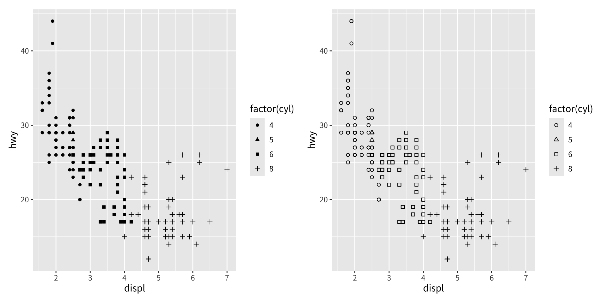
ggplot2 支援 25 個相異的形狀，各以 0 到 24 的整數識別：
- 形狀 0–14 是空心的（只有邊框，無填色）。
- 形狀 15–20 是實心的（以
colour美學填色）。 - 形狀 21–24 是填色形狀，會獨立地回應
colour（邊框）與fill兩個美學。
要手動指派形狀，用 scale_shape_manual() 搭配一個具名的整數向量：
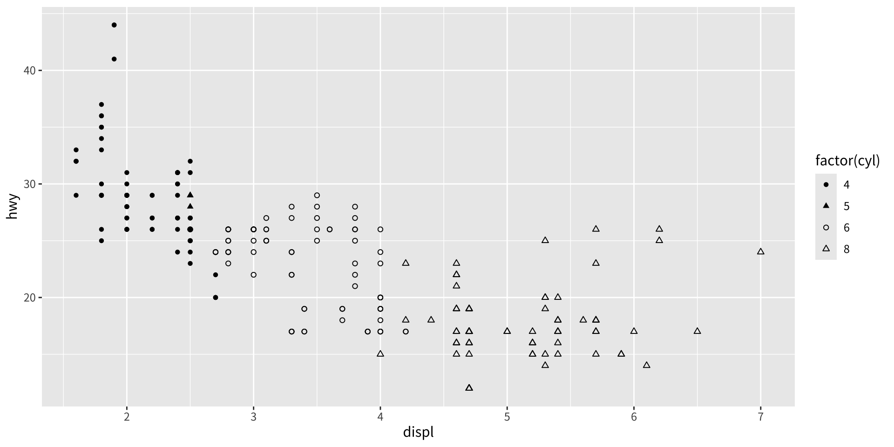
values 向量的名稱對應到離散變數的水準；整數值對應到想要的形狀代碼。
線寬
線寬
linewidth 美學於 ggplot2 3.4.0 引入，控制所呈現之線的寬度。在此版本之前，size 對點大小與線寬身兼二職，這對諸如 geom_pointrange() 這類同時結合兩種元素的複合 geom 造成了模糊。
下面三張圖說明了這個分離：左邊兩個美學都用預設值，中間只增加 size（放大點端點），右邊只增加 linewidth（加粗連接線）：
base_air <- ggplot(airquality, aes(x = factor(Month), y = Temp))
p_def <- base_air +
geom_pointrange(stat = "summary", fun.data = "median_hilow")
p_sz <- base_air +
geom_pointrange(stat = "summary", fun.data = "median_hilow", size = 2)
p_lw <- base_air +
geom_pointrange(stat = "summary", fun.data = "median_hilow", linewidth = 2)
p_def | p_sz | p_lw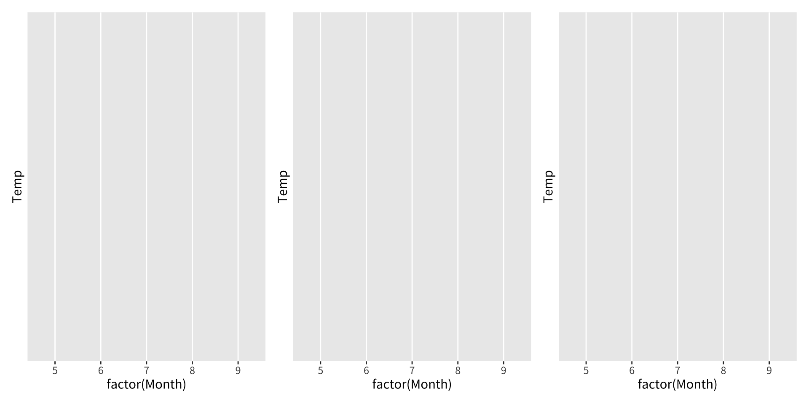
雖然 linewidth 最常被設為固定常數，但它是一個真正的美學，可被映射到資料變數。與面積隨資料值成比例增加的 scale_size() 不同，scale_linewidth() 把資料值映射到線寬的線性增加：
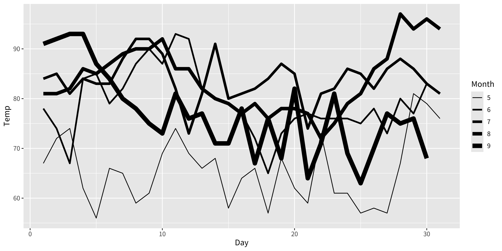
分箱的線寬尺度也可透過 scale_linewidth_binned() 使用，遵循與其他分箱尺度相同的 API。
線型
線型
linetype 美學把一個離散變數映射到所呈現之線的破折號型態。scale_linetype() 是 scale_linetype_discrete() 的別名。連續變數需要 scale_linetype_binned()；scale_linetype_continuous() 函式存在，但依設計會產生錯誤，因為連續的線型漸層沒有知覺基礎。
線型最好保留給類別數目少的變數。即使只有五個類別，圖也可能難以解讀：
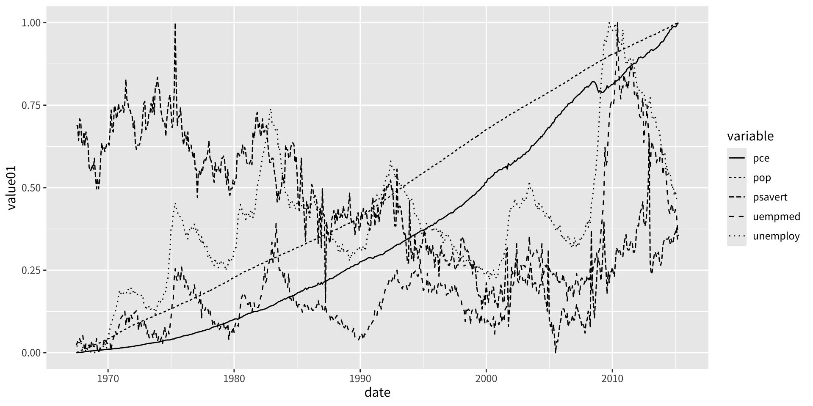
預設的調色盤是 scales::linetype_pal()，它提供 13 種相異的線型態。要查看所有可用的型態：
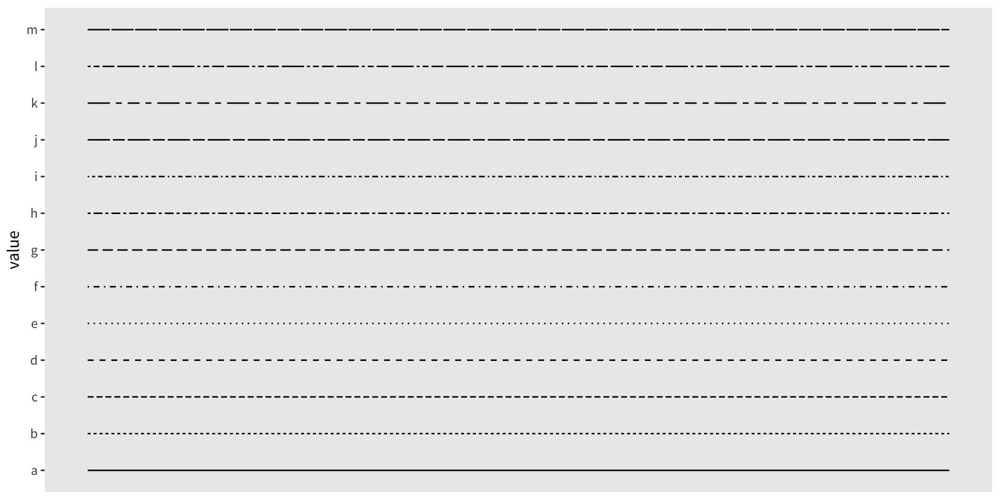
自訂線型
線型態也可指定為至多 8 個十六進位字元（0–F）的字串。每個字元編碼交替的繪製線段與間隙區間的長度。例如，"55" 意指：繪製 5 個單位、間隙 5 個單位（一條規則的虛線）。
自訂線型可用兩種方式套用：
- 用
scale_linetype_manual()搭配一個由十六進位字串組成的具名字元向量。 - 把一個自訂的調色盤函式傳給
discrete_scale()的palette引數。
linetypes <- function(n) {
types <- c("55", "75", "95", "1115", "111115",
"11111115", "5158", "9198", "c1c8")
types[seq_len(n)]
}
df_lt2 <- data.frame(value = letters[1:9])
ggplot(df_lt2, aes(linetype = value)) +
geom_segment(
mapping = aes(x = 0, xend = 1, y = value, yend = value),
show.legend = FALSE
) +
theme(panel.grid = element_blank()) +
scale_x_continuous(NULL, NULL) +
discrete_scale("linetype", palette = linetypes)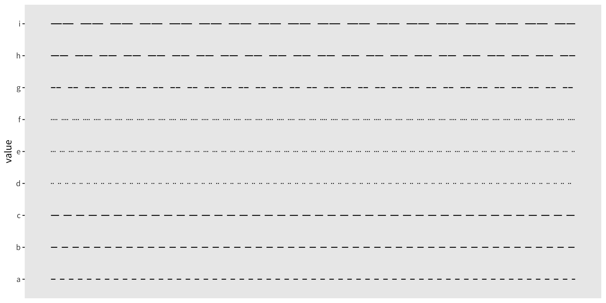
當類別的數目超過調色盤所定義的型態數目時，多出的水準會得到 NA，預設會呈現為空白（不可見）的線。用 na.value 引數覆寫這點：
人類可讀的字串別名也是有效的線型規格："blank"、"solid"、"dashed"、"dotted"、"dotdash"、"longdash" 與 "twodash"。
手動尺度
手動尺度
手動尺度提供一個明確的查找表，把每個離散資料值映射到一個特定的美學值。ggplot2 中每個美學都有對應的手動尺度：scale_colour_manual()、scale_fill_manual()、scale_shape_manual()、scale_linetype_manual()、scale_size_manual() 等等。
核心的引數是 values：一個（可選擇具名的）美學值向量。具名時，ggplot2 依名稱比對；不具名時，它依因子水準的順序比對。
每種美學類型的有效美學值記錄在 vignette("ggplot2-specs")。
用手動顏色尺度建構圖例
scale_colour_manual() 一個特別強大的應用，是在同一張圖上顯示多個變數時建立一個有資訊的圖例。考慮這一對自 LakeHuron 水位偏移 ±5 個單位的時間序列：
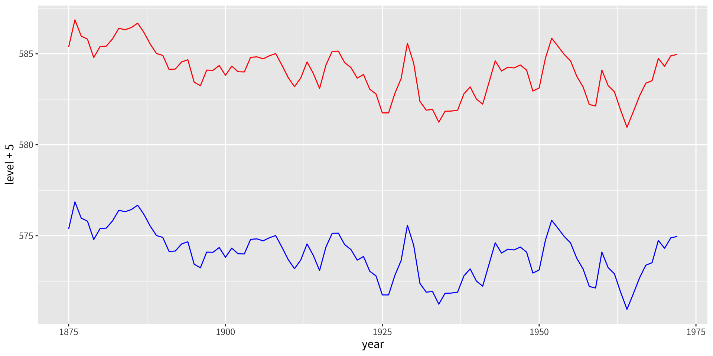
當顏色在 aes() 之外被設為固定常數時，ggplot2 無法為它產生圖例。
解法是在 aes() 內把一個標籤字串映射到顏色美學，然後指示手動尺度如何把那些標籤轉譯成實際的顏色：
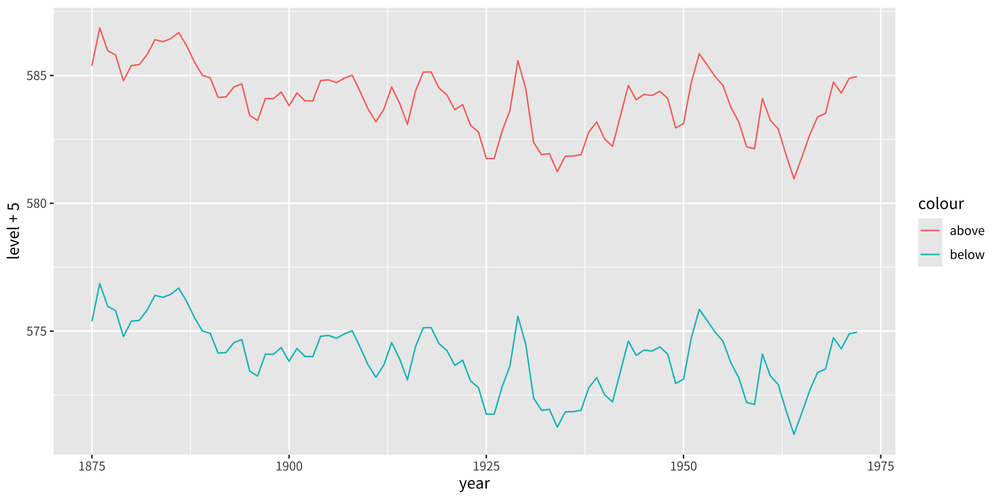
ggplot2 如今認得 colour 是一個美學映射，並自動產生一個圖例——儘管預設的顏色還沒有意義。
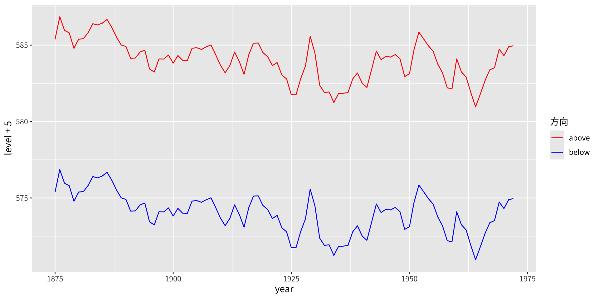
其結果是一個功能完整的圖例，而不需要重塑成「整潔長格式」的資料集。這個模式是通用的：每當你需要為原本會是固定美學的東西產生圖例時，就在 aes() 內把一個字元標籤映射到該美學，並透過對應的手動尺度把它解碼。
恆等尺度
恆等尺度
恆等尺度把資料值不經任何轉換地直接傳遞給美學。當資料欄位已經包含有效的美學值時——例如一欄諸如 "red" 的顏色名稱或諸如 "#FF0000" 的十六進位碼，或一欄整數形狀代碼——它們便很適用。
可用的恆等尺度包括 scale_colour_identity()、scale_fill_identity()、scale_shape_identity()、scale_linetype_identity() 與 scale_size_identity()。
一個引人入勝的例子是 luv_colours 資料集，它記錄了所有 R 內建顏色名稱在 LUV 知覺顏色空間（HCL 所依據的空間）中的位置：
L u v col
1 9341.570 -3.370649e-12 0.0000 white
2 9100.962 -4.749170e+02 -635.3502 aliceblue
3 8809.518 1.008865e+03 1668.0042 antiquewhite
4 8935.225 1.065698e+03 1674.5948 antiquewhite1
5 8452.499 1.014911e+03 1609.5923 antiquewhite2
6 7498.378 9.029892e+02 1401.7026 antiquewhite3每一列包含一個 col 欄，持有該點的實際 R 顏色名稱。把 col 映射到 colour 美學並套用 scale_color_identity()，會把每個點以它自己的顏色呈現——資料空間與美學空間相同，因此不需要、也沒有意義有圖例：
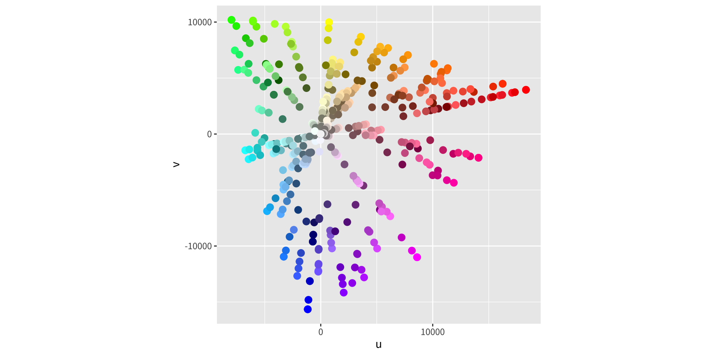
這張圖本身就是圖例：每個點的顏色就是它所代表的顏色。不需要額外的鍵。
何時使用恆等尺度
恆等尺度在兩種情況下適用：
預先縮放的資料：資料集在建構時就已嵌入了顏色名稱、形狀代碼或其他美學值——在結合統計模型或外部工具的輸出時很常見。
以程式化方式指派顏色：當顏色選擇是以演算法計算的（例如由一個自訂的分群函式），而你希望
ggplot2原封不動地尊重它們、而非套用它自己的映射時。
在所有其他情況下，較佳的做法是搭配適當尺度的、正確指定的美學映射，因為它能讓圖例產生，並確保可重現、有原則的顏色選擇。
練習
用
mpg資料集，建立一張displvshwy、size = cyl的散佈圖。比較預設的scale_size()與scale_size_area()。你在什麼時候會偏好後者？用
planets資料建立一張泡泡圖，在 x 軸顯示每個行星的軌道距離、y 軸顯示其名稱，泡泡大小與行星半徑成正比。說明為什麼scale_radius(limits = c(0, NA))對誠實的視覺比較是必要的。用
mpg建立一張shape = class的散佈圖。為什麼當class有超過 6 個水準時 ggplot2 會發出警告？scale_shape_manual()如何讓你繞過這點？
用
airquality建立一張geom_pointrange()的每月溫度摘要圖。示範增加size與增加linewidth對 geom 外觀的獨立效果。以
linetype = variable繪製economics_long。套用scale_linetype_manual()為每個變數指派自訂的十六進位型態線型。線型美學的可讀性極限是什麼？用
scale_linetype_manual()而非顏色來區分兩條序列，重現 §12.5 的LakeHuron範例。哪個做法（顏色或線型）更清楚地傳達了分組？為什麼？用
luv_colours重現恆等尺度的散佈圖。然後加上第二個圖層，只用名稱含"blue"的顏色子集，畫成帶黑色邊框（shape = 21）的較大點。在這個脈絡下scale_fill_identity()有什麼作用？
版權聲明
版權聲明。 本教材改編自 ggplot2: Elegant Graphics for Data Analysis (3e)。所有權利均由原作者與出版者保留。
僅供非商業用途。 本教材嚴格限定用於教育目的，不得用於商業獲利。
適當標註出處。 任何對本教材的重製、散布或使用，都必須適當標註原始出處。

ggplot2: Elegant Graphics for Data Analysis